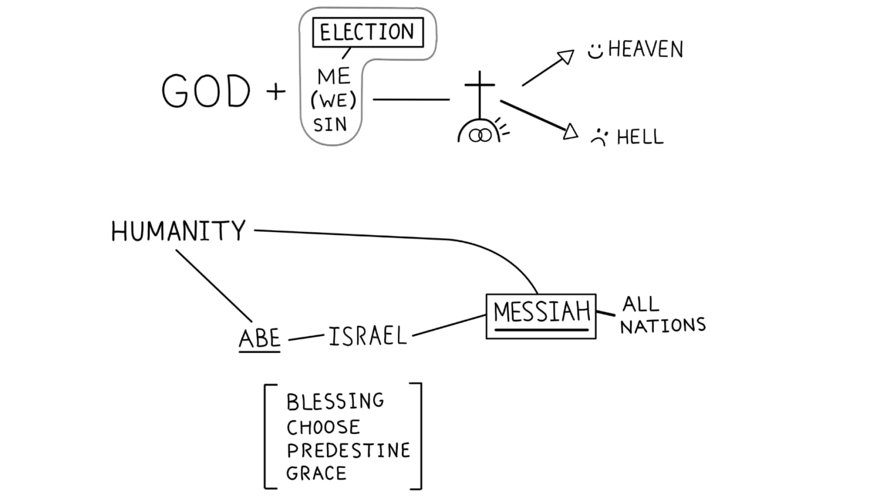

Sessão 8: Bênção e Eleição na História BíblicaSession 8: Blessing and Election in the Biblical Story
Principais Lições
- Precisamos deixar Paulo e a Bíblia Hebraica definirem o que ele quer dizer com as palavras que usa.We need to let Paul and the Hebrew Bible define what he means by the words he uses.
- Entender a visão de Paulo sobre a história bíblica ajuda a entender seus escritos.Understanding Paul's view of the biblical story helps us understand his writings.
- A eleição bíblica é Deus escolhendo um dentre os muitos para restaurar sua bênção aos muitos.Biblical election is God choosing one out of the many to restore his blessing to the many.
- Quando Paulo usa “eleição” e “predestinação”, refere-se a Deus escolhendo Israel como veículo para restaurar sua bênção às nações — nota-se que o conceito é corporativo, não individual.When Paul uses "election" and "predestination," he refers to God choosing Israel to restore blessing to the nations — notice his concept is corporate, not primarily individual.
A Linha da História da Bênção
As palavras-chave dessa bênção traçam o desenvolvimento da bênção através das Escrituras de Israel, focando a história na realização messiânica da bênção prometida à humanidade. A bênção e comissão universal de Deus aos humanos (Gên. 1) é perdida pela rebelião; Abraão e sua descendência assumem a responsabilidade da fidelidade da aliança como a família por meio da qual Deus restaurará sua bênção. Israel experimenta a bênção de Deus (Êx. 1) e é comissionado a representar a santidade de Deus às nações. Como as nações falham, a descendência de Davi é comissionada como o próximo portador da bênção (2 Sm. 7), para que o plano original de Deus para as nações se cumpra (Sal. 72). Esse arco narrativo é central ao “messianismo incorporativo” de Jesus: em Cristo, as pessoas são convidadas a descobrir sua identidade como a nova humanidade na família de Abraão; o que é verdade de Jesus agora é verdade delas.The key words of this blessing trace the development of the blessing through Israel's Scriptures, focusing the story on the messianic realization of the blessing promised to humanity. God's universal blessing and commission of humans (Gen. 1) is forfeited through rebellion; Abraham and his seed bear the covenant responsibility as the family through which God restores his blessing. Israel experiences God's blessing (Exod. 1) and is commissioned to represent his holiness to the nations. As the nations fail, the seed of David is commissioned (2 Sam. 7) so the original plan for the nations is fulfilled (Ps. 72). This arc is core to Jesus' "incorporative messiah-ship": in Christ, people discover their identity as the new humanity in Abraham's family; what is true of Jesus is now true of them.
As Escrituras da Bênção
Humanidade — Gênesis 1:28: "Deus os abençoou e lhes disse: 'Frutificai, multiplicai-vos, enchei a terra e sujeitai-a; dominai sobre os peixes do mar, sobre as aves dos céus e sobre todo ser vivo que se move sobre a terra'." Abraão — Gênesis 12:2-3: "Farei de ti uma grande nação, e te abençoarei, e engrandecerei o teu nome... e em ti serão benditas todas as famílias da terra." Gênesis 22:17-18: "Certamente abençoarei abundantemente a tua descendência... e na tua descendência serão benditas todas as nações da terra." Israel — Êxodo 1:1,7: "Os filhos de Israel foram frutíferos, aumentaram, multiplicaram-se e fortaleceram-se extremamente." Linhagem Messiânica de Davi — 2 Samuel 7:12-14,29: "Quando teus dias se completarem... levantarei a teu descendente... estabelecerei o trono do seu reino para sempre... Ele me será por filho." Salmo 72:17: "Permaneça o seu nome para sempre... e nele se bendirão todos os povos."Humanity — Genesis 1:28: "God blessed them; and God said to them, 'Be fruitful and multiply, and fill the earth, and subdue it; and rule over the fish of the seas and over the birds of the sky and over every living thing that moves on the earth.'" Abraham — Genesis 12:2-3: "And I will make you a great nation, and I will bless you, and make your name great; and so you shall be a blessing... and in you all the families of the earth will be blessed." Genesis 22:17-18: "indeed I will greatly bless you... and in your seed all the nations of the earth shall be blessed." Israel — Exodus 1:1,7: "the sons of Israel were fruitful and increased greatly, and multiplied, and became exceedingly mighty." David's Messianic Line — 2 Samuel 7:12-14,29: "I will raise up your descendant after you... I will establish the throne of his kingdom forever... He shall build a house for my name; I will be a father to him." Psalm 72:17: "may his name endure forever... let all nations call him blessed."
O Jesus Ressuscitado e o Espírito: Atos 2:14-36 e Atos 3:12-26 falam do Jesus ressuscitado sendo exaltado para governar tanto o Céu quanto a Terra. O dom do Espírito ao povo espalha a bênção de Deus às nações, como foi prometido a Abraão. "Os propósitos de Deus para a raça humana em geral recaíram sobre Abraão e dele sobre Israel, por meio de quem o plano divino será cumprido. Israel é, ou deveria se tornar, a verdadeira humanidade de Deus. O que Deus intentou para Adão será dado à descendência de Abraão, que herdará um novo Éden com sua glória restaurada... A expectativa de um Messias era de um que atrairia para si a esperança e destino de todo o povo de Israel... A palavra Χριστὸς em Paulo deve regularmente ser lida como 'Messias', e um dos principais significados que esta palavra carrega é incorporativo, isto é, refere-se ao Messias como aquele em quem o povo de Deus é sumariado, de modo que possam ser referidos como estando 'nele'." Adaptado de Wright, N.T. (1993). The Climax of the Covenant. Fortress Press. 20-21, 25, 41.The Risen Jesus and the Spirit: Acts 2:14-36 and Acts 3:12-26 both speak to the risen Jesus being exalted to rule both Heaven and Earth. The gifting of the Spirit to the people spreads God's blessing to the nations as was promised to Abraham. "God's purposes for the human race in general have devolved onto Abraham and from him onto Israel, through whom the divine plan will be fulfilled. Israel is, or is supposed to become, God's true humanity. What God intended for Adam will be given to the seed of Abraham, who will inherit a new Eden with its restored glory... The expectation for a Messiah was for one who would draw onto himself the hope and destiny of the entire people of Israel... The word Χριστὸς in Paul should regularly be read as 'Messiah,' and one of the chief significances that this word carries is incorporative, that is, it refers to the Messiah as the one in whom the people of God are summed up, so that they can be referred to as being 'in him.'" Adapted from Wright, N.T. (1993). The Climax of the Covenant. Fortress Press. 20-21, 25, 41.

Eleição e Predestinação em Efésios
Eleição e predestinação devem ser entendidas à luz do uso que Paulo faz desses termos no contexto da linha da história bíblica, focada em Israel e sua aliança com Yahweh.Election and predestination must be understood in light of Paul's use of these terms in context of the biblical storyline that is focused on Israel and their covenant with Yahweh.
Pergunta de Reflexão
Como a eleição de Israel como “um para os muitos” reformula sua compreensão da predestinação?How does Israel's election as "one for the many" reshape your understanding of predestination?